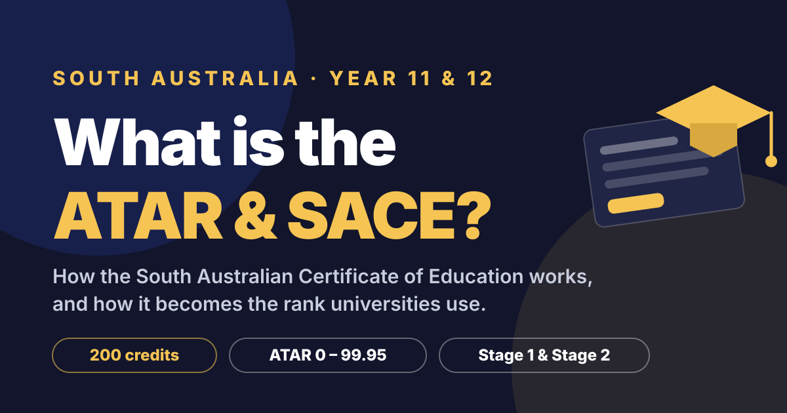
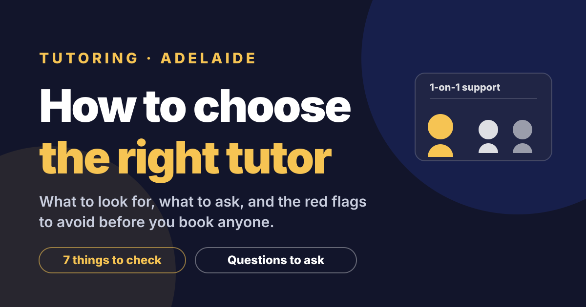

UCAT
UCATWhat is the UCAT?
What the UCAT tests, how the four subtests are scored, and the 2026 dates and fees for future medicine and dentistry students.
Read article →Blog
Plain-English guides to the SACE, ATAR, UCAT and smarter study habits, written by Adelaide tutors.
UCATWhat the UCAT tests, how the four subtests are scored, and the 2026 dates and fees for future medicine and dentistry students.
Read article →
SACE & ATARThe 200 credits, Stage 1 and 2, scaled scores and Merits, and how SATAC turns Year 12 results into an ATAR out of 99.95.
Read article →
Tutoring AdelaideSeven signs of a great tutor, the questions to ask before booking, red flags to avoid, and what progress should look like.
Read article →